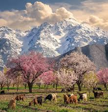
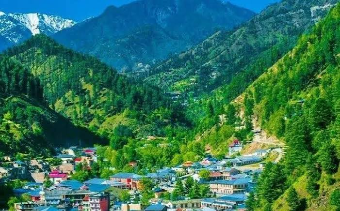
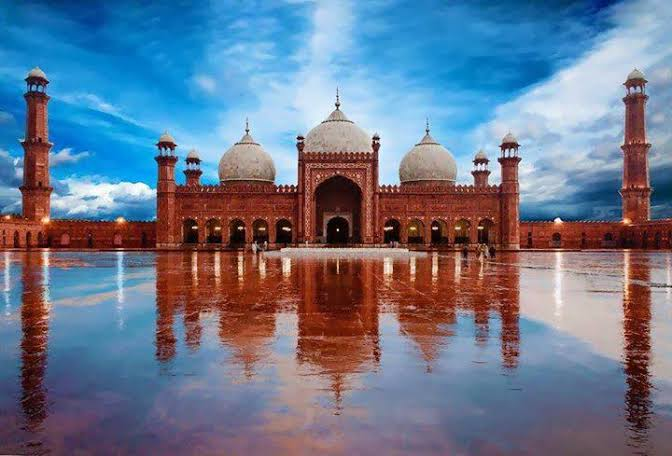
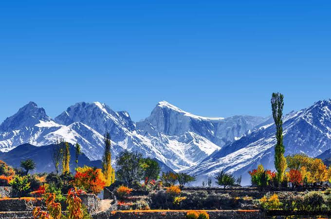

Hunza Valley

Orchards, old forts and views of the Karakoram range.
Best time: April to October
From snow-capped peaks to historic cities, plan your next journey here.

Orchards, old forts and views of the Karakoram range.
Best time: April to October

A Mughal-era fort in the heart of the old city.
Best time: November to March

Green hills, rivers and quiet mountain towns.
Best time: March to October

Alpine meadows with a close view of Nanga Parbat.
Best time: June to September

One of the largest mosques in the world, built in 1673.
Best time: November to March

Lakes, deserts and the gateway to K2.
Best time: May to September
Discover Pakistan is a simple guide for travellers. It lists popular places, the best time to visit each one, and practical tips to help you plan your trip.